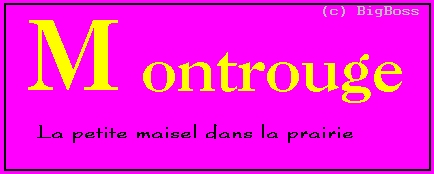

Episode douloureux de l'histoire Montrougienne,voici racontée à travers ces quelques lignes l'arrivée des combattants :
Tout d'abord,parlons de la répartition des chambres superbement organiséeset de la mésinformation totale sur les studios : ALS inconnues (ou du moins pour Telecom car les PC savaient depuis longtemps qu'elle était de 1053 F).
Ensuite,parlons du bus ! Une vieille planche à quatre roues ( voire peut-être à trois vu la stabilité de l'engin ),grinçante et aux sièges très dynamiques ! En plus,tous les montrougiens y étaient amassés, accentuant ainsi l'effet de clan rejeté.
Enfin,l'arrivée à Montrouge où nous avons dû subir au minimum 2 heures d'attente pour signer ce fabuleux contrat de résidence !
Résultat : le parcours Montrouge - Telecom à 22h dans un quartier inconnu et un dîner à 22h30 !
,soulignons les nombreux points positifs:
- les studios d'une beauté inimaginable
- des collègues très charmantes
- Régis et Nathalie